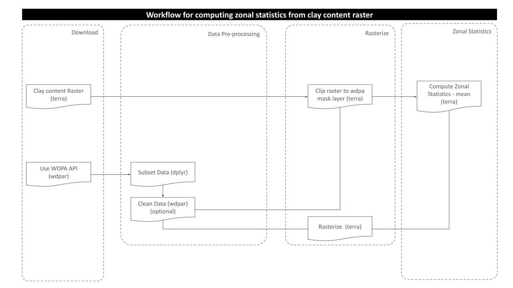
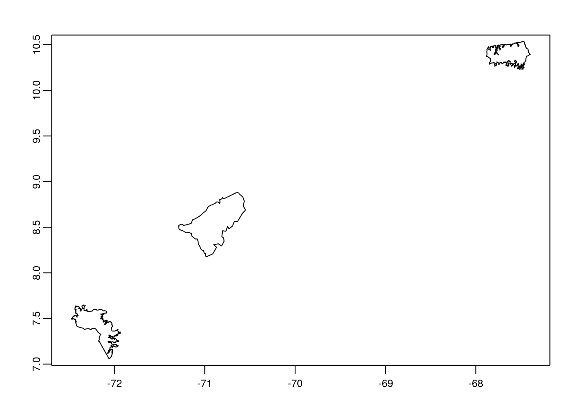
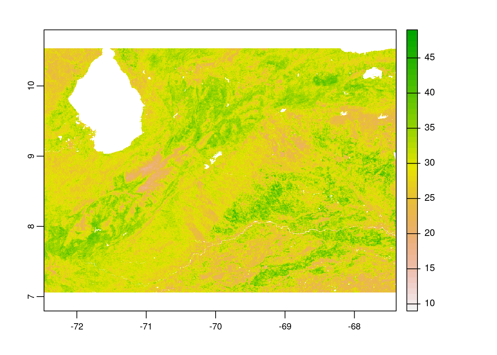
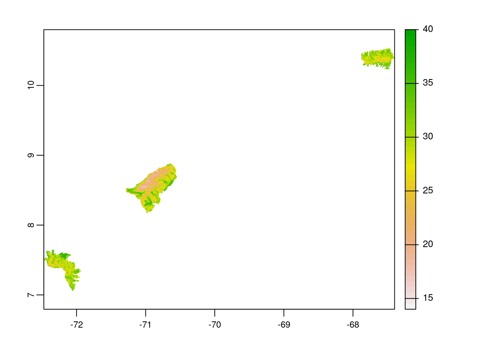
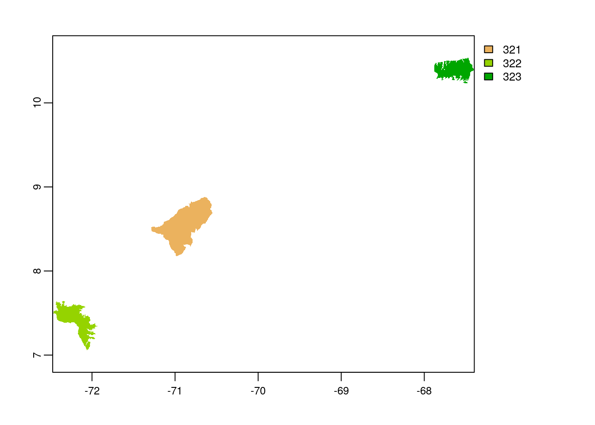

Last updated: 2021-10-19
Checks: 6 1
Knit directory: mapme.protectedareas/
This reproducible R Markdown analysis was created with workflowr (version 1.6.2). The Checks tab describes the reproducibility checks that were applied when the results were created. The Past versions tab lists the development history.
The R Markdown is untracked by Git. To know which version of the R Markdown file created these results, you’ll want to first commit it to the Git repo. If you’re still working on the analysis, you can ignore this warning. When you’re finished, you can run wflow_publish to commit the R Markdown file and build the HTML.
Great job! The global environment was empty. Objects defined in the global environment can affect the analysis in your R Markdown file in unknown ways. For reproduciblity it’s best to always run the code in an empty environment.
The command set.seed(20210305) was run prior to running the code in the R Markdown file. Setting a seed ensures that any results that rely on randomness, e.g. subsampling or permutations, are reproducible.
Great job! Recording the operating system, R version, and package versions is critical for reproducibility.
Nice! There were no cached chunks for this analysis, so you can be confident that you successfully produced the results during this run.
Great job! Using relative paths to the files within your workflowr project makes it easier to run your code on other machines.
Great! You are using Git for version control. Tracking code development and connecting the code version to the results is critical for reproducibility.
The results in this page were generated with repository version d0760bb. See the Past versions tab to see a history of the changes made to the R Markdown and HTML files.
Note that you need to be careful to ensure that all relevant files for the analysis have been committed to Git prior to generating the results (you can use wflow_publish or wflow_git_commit). workflowr only checks the R Markdown file, but you know if there are other scripts or data files that it depends on. Below is the status of the Git repository when the results were generated:
Ignored files:
Ignored: .Rproj.user/
Untracked files:
Untracked: analysis/clay-content.Rmd
Unstaged changes:
Modified: analysis/accessibility.rmd
Modified: code/big_data_processing.R
Note that any generated files, e.g. HTML, png, CSS, etc., are not included in this status report because it is ok for generated content to have uncommitted changes.
There are no past versions. Publish this analysis with wflow_publish() to start tracking its development.
# load required libraries
library("sf")
library("terra")
library("wdpar")
library("tidyverse")
starttime<-Sys.time() # mark the start time of this routine to calculate processing time at the endFrom the agricultural perspective, the information on the amount of clay content in the soil is vital as it defines the productivity of the soil. Since the clay holds water and nutrients and allows them to remain in soil, the more clay content thus results in high productive capacity [1]. The variable that we are processig here that provides information on the percentage of clay content in the soil can be used as an indicator for soil fertility and thus be part of an agricultural aptitude index. OpenLandMap is a data portal which provides open access to several geo-datasets. The global rasters on clay content can be accessed freely from this portal at six standard depths (0, 10, 30, 60, 100 and 200 cm).
The purpose of this analysis is to compute mean percentage of clay content in the soil for the desired protected area of interest. For this, following processing routine is followed:

For this analysis, we would try to get the country level polygon data from wdpar package. wdpar is a library to interface to the World Database on Protected Areas (WDPA). The library is used to monitor the performance of existing PAs and determine priority areas for the establishment of new PAs. We will use Venezuela - for other countries of your choice, simply provide the country name or the ISO name e.g. BRA for Brazil, Gy for Guyana, COL for Colombia.
# fetch the raw data from wdpar of country
vn_wdpa_raw <-
wdpar::wdpa_fetch("VEN")Since there are 290 enlisted protected areas in Venezuela (as of time of writing), we want to compute zonal statistics only for the polygon data of: - Sierra Nevada - wdpaid 321, - Páramos de Tamá, Cobre y Judio - wdpaid 322, and - Henri Pittier - wdpaid 323
For this, we have to subset the country level polygon data to the pa level.
# subset three wdpa polygons by their wdpa ids
vn_wdpa_subset <-
vn_wdpa_raw%>%
filter(WDPAID %in% c(321,322,323))Now, we will reproject the polygon data to the WGS84 and then apply vect function from terra package to further use it for terra functionalities.
# reproject to the WGS84
vn_wdpa_subset <- st_transform(vn_wdpa_subset,
"+proj=longlat +datum=WGS84 +no_defs")
# spatvector for terra compatibility
vn_wdpa_subset_v <-
vect(vn_wdpa_subset)
# we can plot the data to see the three selected polygons
plot(vn_wdpa_subset_v)
The global raster datasets are available to download for six standard depths (0, 10, 30, 60, 100 and 200 cm) and also with options on mean and median. Here, we are going to load the mean raster layer for the standard depth of 10 cm using package terra.
# load clay content raster
clay_rast <-
terra::rast("../../datalake/mapme.protectedareas/input/clay_content/clay_content_10_cm.tif")
# view raster details
clay_rastclass : SpatRaster
dimensions : 71698, 172800, 1 (nrow, ncol, nlyr)
resolution : 0.002083333, 0.002083333 (x, y)
extent : -180, 179.9999, -62.00081, 87.37 (xmin, xmax, ymin, ymax)
coord. ref. : lon/lat WGS 84 (EPSG:4326)
source : clay_content_10_cm.tif
name : clay_content_10_cm As we completed raster and vector data preparation, the next step would be to clip the raster layer by the selected protected areas polygon both by its extent and mask layer. If we apply function crop, it gives us the raster layer by extent. However, using mask function returns the raster to defined vector polygon layer, which is required for zonal statistics computation.
# crop raster by polygon
clay_rast_crop <-
terra::crop(clay_rast,
vn_wdpa_subset_v)
# plot the cropped raster layer
plot(clay_rast_crop)
# mask the raster by polygon
clay_rast_mask <-
terra::mask(clay_rast_crop,
vn_wdpa_subset_v)
# plot the masked raster layer
plot(clay_rast_mask) Note: With these above two plots, you cans see the difference between the use of functions crop & mask. Thus, always use mask to compute zonal statistics.
To compute the zonal statistics, it is necessary to rasterize the polygon layer. Doing so, values are transferred from the spatial objects to raster cells. We need to pass the extent layer and the mask layer to the rasterize function.
# rasterize the polygon
vn_subset_rast <-terra::rasterize(vn_wdpa_subset_v,
clay_rast_mask,
vn_wdpa_subset_v$WDPAID)
# plot the rasterized polygon
plot(vn_subset_rast)
A zonal statistics operation is one that calculates statistics on cell values of a raster (a value raster) within the zones defined by another dataset [ArcGIS definition]. Here, we are interested on only to compute the mean percentage of clay content in the soil, so, we would use function mean for zonal operation.
# zonal stats
zstats <- terra::zonal(clay_rast_mask,
vn_subset_rast,
fun='mean',
na.rm=T)
# create dataframe to receive the result
df.zstats <- data.frame(WDPAID=NA,
clay_content_percentage_mean=NA)
# rename column to match with dataframe
colnames(zstats) <-
colnames(df.zstats)
# view the data
rbind(df.zstats,zstats)[-1,] WDPAID clay_content_percentage_mean
2 321 26.57843
3 322 30.02754
4 323 29.77513From the zonal statistics result, we can see that the polygon with wdpaid 322 contains more percentage of clay in the soil while the polygon with id 321 contains less compared to other polygons. In this way, we can compute percentage of clay content in the soil for our desired region of interest.
In the end we are going to have a look how long the rendering of this file took to get an idea about the processing speed of this routine.
stoptime<-Sys.time()
print(starttime-stoptime)Time difference of -5.384243 secs[1] Paul Schroeder (2016): Clays in the Critical Zone: An Introduction . Clays and Clay Minerals 65 (5): 586-587. DOI: 10.1346/CCMN.2016.064045
sessionInfo()R version 3.6.3 (2020-02-29)
Platform: x86_64-pc-linux-gnu (64-bit)
Running under: Ubuntu 18.04.6 LTS
Matrix products: default
BLAS: /usr/lib/x86_64-linux-gnu/blas/libblas.so.3.7.1
LAPACK: /usr/lib/x86_64-linux-gnu/lapack/liblapack.so.3.7.1
locale:
[1] LC_CTYPE=C.UTF-8 LC_NUMERIC=C LC_TIME=C.UTF-8
[4] LC_COLLATE=C.UTF-8 LC_MONETARY=C.UTF-8 LC_MESSAGES=C.UTF-8
[7] LC_PAPER=C.UTF-8 LC_NAME=C LC_ADDRESS=C
[10] LC_TELEPHONE=C LC_MEASUREMENT=C.UTF-8 LC_IDENTIFICATION=C
attached base packages:
[1] stats graphics grDevices utils datasets methods base
other attached packages:
[1] forcats_0.5.1 stringr_1.4.0 dplyr_1.0.7 purrr_0.3.4
[5] readr_1.4.0 tidyr_1.1.4 tibble_3.1.5 ggplot2_3.3.4
[9] tidyverse_1.3.1 wdpar_1.0.6 terra_1.4-9 sf_1.0-3
loaded via a namespace (and not attached):
[1] Rcpp_1.0.7 countrycode_1.2.0 lubridate_1.7.10 class_7.3-19
[5] assertthat_0.2.1 rprojroot_2.0.2 digest_0.6.27 utf8_1.2.2
[9] cellranger_1.1.0 R6_2.5.1 backports_1.2.1 reprex_2.0.0
[13] evaluate_0.14 e1071_1.7-9 highr_0.8 httr_1.4.2
[17] pillar_1.6.3 rlang_0.4.11 curl_4.3.2 readxl_1.3.1
[21] rstudioapi_0.13 jquerylib_0.1.4 rmarkdown_2.11 munsell_0.5.0
[25] proxy_0.4-26 broom_0.7.6 compiler_3.6.3 httpuv_1.6.1
[29] modelr_0.1.8 xfun_0.24 pkgconfig_2.0.3 htmltools_0.5.1.1
[33] tidyselect_1.1.1 workflowr_1.6.2 codetools_0.2-18 fansi_0.5.0
[37] withr_2.4.2 crayon_1.4.1 dbplyr_2.1.1 later_1.2.0
[41] rappdirs_0.3.3 grid_3.6.3 jsonlite_1.7.2 gtable_0.3.0
[45] lifecycle_1.0.1 DBI_1.1.1 git2r_0.28.0 magrittr_2.0.1
[49] units_0.7-2 scales_1.1.1 KernSmooth_2.23-20 cli_3.0.1
[53] stringi_1.6.2 fs_1.5.0 promises_1.2.0.1 xml2_1.3.2
[57] bslib_0.2.5.1 ellipsis_0.3.2 generics_0.1.0 vctrs_0.3.8
[61] tools_3.6.3 glue_1.4.2 hms_1.0.0 yaml_2.2.1
[65] colorspace_2.0-1 rvest_1.0.0 classInt_0.4-3 knitr_1.34
[69] haven_2.3.1 sass_0.4.0